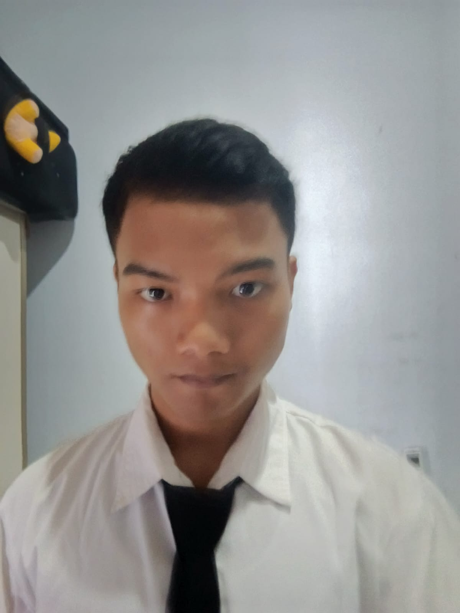

IT Support
Bagus Laptop Bali | 2025 - Sekarang
- Melakukan troubleshooting laptop dan komputer.
- Melakukan instalasi dan maintenance CCTV.
- Menangani perbaikan printer.
- Membantu instalasi access point dan jaringan dasar.

Shop Administrator | IT Support | Aspiring Developer
Halo! Saya Arta Yasa, mahasiswa sekaligus teknisi IT yang tertarik pada komputer, jaringan, dan pengembangan web.
Perpaduan pengalaman praktik IT dan minat pada pengembangan software.
Saya adalah teknisi IT sekaligus mahasiswa yang memiliki pengalaman menangani kebutuhan teknis pelanggan dan operasional perangkat komputer. Pekerjaan saya meliputi pemeriksaan masalah, troubleshooting, perbaikan perangkat, instalasi CCTV, serta pemasangan dan konfigurasi perangkat jaringan dasar.
Di luar pekerjaan teknis, saya mempelajari pengembangan web dan pemrograman untuk memahami bagaimana solusi digital dirancang dan dibangun. Saya ingin terus memperkuat dasar IT, networking, dan software development agar dapat menangani masalah secara menyeluruh.
Bagus Laptop Bali | 2025 - Sekarang
| Institusi | Keterangan |
|---|---|
| Institut Bisnis dan Teknologi Indonesia | Rekayasa Sistem Komputer / 2025-sekarang |
| SMA Negeri 8 Denpasar | 2022-2025 |
Saya sedang membangun portofolio proyek IT dan pengembangan web untuk mendokumentasikan hasil pekerjaan serta proses belajar saya.
Silakan isi formulir berikut untuk mengirim pesan.